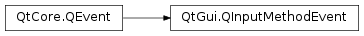

QInputMethodEvent¶
Synopsis¶
Functions¶
- def
attributes() - def
commitString() - def
preeditString() - def
replacementLength() - def
replacementStart() - def
setCommitString(commitString[, replaceFrom=0[, replaceLength=0]])
Detailed Description¶
The
PySide2.QtGui.QInputMethodEventclass provides parameters for input method events.Input method events are sent to widgets when an input method is used to enter text into a widget. Input methods are widely used to enter text for languages with non-Latin alphabets.
Note that when creating custom text editing widgets, the
Qt.WA_InputMethodEnabledwindow attribute must be set explicitly (using theQWidget.setAttribute()function) in order to receive input method events.The events are of interest to authors of keyboard entry widgets who want to be able to correctly handle languages with complex character input. Text input in such languages is usually a three step process:
Starting to Compose
When the user presses the first key on a keyboard, an input context is created. This input context will contain a string of the typed characters.
Composing
With every new key pressed, the input method will try to create a matching string for the text typed so far called preedit string. While the input context is active, the user can only move the cursor inside the string belonging to this input context.
Completing
At some point, the user will activate a user interface component (perhaps using a particular key) where they can choose from a number of strings matching the text they have typed so far. The user can either confirm their choice cancel the input; in either case the input context will be closed.
PySide2.QtGui.QInputMethodEventmodels these three stages, and transfers the information needed to correctly render the intermediate result. APySide2.QtGui.QInputMethodEventhas two main parameters:PySide2.QtGui.QInputMethodEvent.preeditString()andPySide2.QtGui.QInputMethodEvent.commitString(). ThePySide2.QtGui.QInputMethodEvent.preeditString()parameter gives the currently active preedit string. ThePySide2.QtGui.QInputMethodEvent.commitString()parameter gives a text that should get added to (or replace parts of) the text of the editor widget. It usually is a result of the input operations and has to be inserted to the widgets text directly before the preedit string.If the
PySide2.QtGui.QInputMethodEvent.commitString()should replace parts of the of the text in the editor,PySide2.QtGui.QInputMethodEvent.replacementLength()will contain the number of characters to be replaced.PySide2.QtGui.QInputMethodEvent.replacementStart()contains the position at which characters are to be replaced relative from the start of the preedit string.A number of attributes control the visual appearance of the preedit string (the visual appearance of text outside the preedit string is controlled by the widget only). The
QInputMethodEvent.AttributeTypeenum describes the different attributes that can be set.A class implementing
QWidget.inputMethodEvent()orQGraphicsItem.inputMethodEvent()should at least understand and honor theTextFormatandCursorattributes.Since input methods need to be able to query certain properties from the widget or graphics item, subclasses must also implement
QWidget.inputMethodQuery()andQGraphicsItem.inputMethodQuery(), respectively.When receiving an input method event, the text widget has to performs the following steps:
If the widget has selected text, the selected text should get removed.
Remove the text starting at
PySide2.QtGui.QInputMethodEvent.replacementStart()with lengthPySide2.QtGui.QInputMethodEvent.replacementLength()and replace it by thePySide2.QtGui.QInputMethodEvent.commitString(). IfPySide2.QtGui.QInputMethodEvent.replacementLength()is 0,PySide2.QtGui.QInputMethodEvent.replacementStart()gives the insertion position for thePySide2.QtGui.QInputMethodEvent.commitString().When doing replacement the area of the preedit string is ignored, thus a replacement starting at -1 with a length of 2 will remove the last character before the preedit string and the first character afterwards, and insert the commit string directly before the preedit string.
If the widget implements undo/redo, this operation gets added to the undo stack.
If there is no current preedit string, insert the
PySide2.QtGui.QInputMethodEvent.preeditString()at the current cursor position; otherwise replace the previousPySide2.QtGui.QInputMethodEvent.preeditString()with the one received from this event.If the widget implements undo/redo, the
PySide2.QtGui.QInputMethodEvent.preeditString()should not influence the undo/redo stack in any way.The widget should examine the list of attributes to apply to the preedit string. It has to understand at least the
TextFormatand Cursor attributes and render them as specified.See also
PySide2.QtGui.QInputMethod
-
class
PySide2.QtGui.QInputMethodEvent¶ -
class
PySide2.QtGui.QInputMethodEvent(other) -
class
PySide2.QtGui.QInputMethodEvent(preeditText, attributes) Parameters: - attributes –
- other –
PySide2.QtGui.QInputMethodEvent - preeditText – unicode
Constructs an event of type
QEvent.InputMethod. ThePySide2.QtGui.QInputMethodEvent.attributes(),PySide2.QtGui.QInputMethodEvent.preeditString(),PySide2.QtGui.QInputMethodEvent.commitString(),PySide2.QtGui.QInputMethodEvent.replacementStart(), andPySide2.QtGui.QInputMethodEvent.replacementLength()are initialized to default values.Constructs a copy of
other.Constructs an event of type
QEvent.InputMethod. The preedit text is set topreeditText, the attributes toattributes.The
PySide2.QtGui.QInputMethodEvent.commitString(),PySide2.QtGui.QInputMethodEvent.replacementStart(), andPySide2.QtGui.QInputMethodEvent.replacementLength()values can be set usingPySide2.QtGui.QInputMethodEvent.setCommitString().
-
PySide2.QtGui.QInputMethodEvent.AttributeType¶ Constant Description QInputMethodEvent.TextFormat A PySide2.QtGui.QTextCharFormatfor the part of the preedit string specified by start and length. value contains aPySide2.QtCore.QVariantof typePySide2.QtGui.QTextFormatspecifying rendering of this part of the preedit string. There should be at most one format for every part of the preedit string. If several are specified for any character in the string the behaviour is undefined. A conforming implementation has to at least honor the backgroundColor, textColor and fontUnderline properties of the format.QInputMethodEvent.Cursor If set, a cursor should be shown inside the preedit string at position start. The length variable determines whether the cursor is visible or not. If the length is 0 the cursor is invisible. If value is a PySide2.QtCore.QVariantof typePySide2.QtGui.QColorthis color will be used for rendering the cursor, otherwise the color of the surrounding text will be used. There should be at most one Cursor attribute per event. If several are specified the behaviour is undefined.QInputMethodEvent.Language The variant contains a PySide2.QtCore.QLocaleobject specifying the language of a certain part of the preedit string. There should be at most one language set for every part of the preedit string. If several are specified for any character in the string the behavior is undefined.QInputMethodEvent.Ruby The ruby text for a part of the preedit string. There should be at most one ruby text set for every part of the preedit string. If several are specified for any character in the string the behaviour is undefined. QInputMethodEvent.Selection If set, the edit cursor should be moved to the specified position in the editor text contents. In contrast with Cursor, this attribute does not work on the preedit text, but on the surrounding text. The cursor will be moved after the commit string has been committed, and the preedit string will be located at the new edit position. The start position specifies the new position and the length variable can be used to set a selection starting from that point. The value is unused.See also
Attribute
-
PySide2.QtGui.QInputMethodEvent.attributes()¶ Return type: Returns the list of attributes passed to the
PySide2.QtGui.QInputMethodEventconstructor. The attributes control the visual appearance of the preedit string (the visual appearance of text outside the preedit string is controlled by the widget only).See also
-
PySide2.QtGui.QInputMethodEvent.commitString()¶ Return type: unicode Returns the text that should get added to (or replace parts of) the text of the editor widget. It usually is a result of the input operations and has to be inserted to the widgets text directly before the preedit string.
-
PySide2.QtGui.QInputMethodEvent.preeditString()¶ Return type: unicode Returns the preedit text, i.e. the text before the user started editing it.
-
PySide2.QtGui.QInputMethodEvent.replacementLength()¶ Return type: PySide2.QtCore.intReturns the number of characters to be replaced in the preedit string.
-
PySide2.QtGui.QInputMethodEvent.replacementStart()¶ Return type: PySide2.QtCore.intReturns the position at which characters are to be replaced relative from the start of the preedit string.
-
PySide2.QtGui.QInputMethodEvent.setCommitString(commitString[, replaceFrom=0[, replaceLength=0]])¶ Parameters: - commitString – unicode
- replaceFrom –
PySide2.QtCore.int - replaceLength –
PySide2.QtCore.int
Sets the commit string to
commitString.The commit string is the text that should get added to (or replace parts of) the text of the editor widget. It usually is a result of the input operations and has to be inserted to the widgets text directly before the preedit string.
If the commit string should replace parts of the of the text in the editor,
replaceLengthspecifies the number of characters to be replaced.replaceFromspecifies the position at which characters are to be replaced relative from the start of the preedit string.
© 2018 The Qt Company Ltd. Documentation contributions included herein are the copyrights of their respective owners. The documentation provided herein is licensed under the terms of the GNU Free Documentation License version 1.3 as published by the Free Software Foundation. Qt and respective logos are trademarks of The Qt Company Ltd. in Finland and/or other countries worldwide. All other trademarks are property of their respective owners.